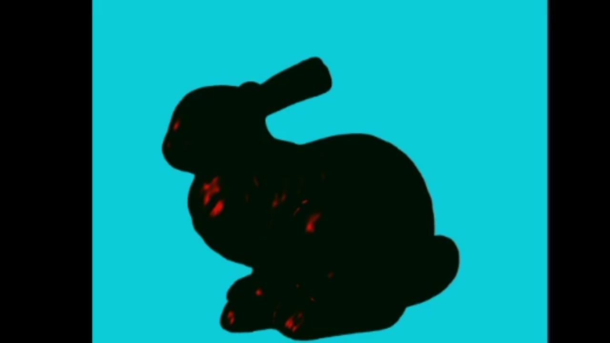

3D Models and Lighting
C++ OpenGLThis project was the second solo assignment for UCSD's Introduction to Computer Graphics class. It involved rendering 3D models with faces, using mouse controls, and writing shaders to set up light sources and material properties.



Goals for this Project:
Project Rubric and Directions- Parse the faces from the .obj files and display the models with triangles.
- Use the mouse to rotate and scale the model.
-
Assign different material properties for each model:
- Shiny, with no diffuse reflection
- No shininess, only uses diffuse reflection
- Significant diffuse and specular reflection components
- Create three different light sources - point light, directional light, and spotlight - with three different colors. Render spheres to represent the location and color of the light sources.
- When a light's rotation is disabled, keep the light fixed in the model space.
Keyboard Controls:
- F1: Render the bunny model
- F2: Render the dragon model
- F3: Render the bear model
- n: Switch between normal coloring and the Phong illumination model
- 1: Enable/disable point light rotation
- 2: Enable/disable spotlight rotation
- 3: Enable/disable directional light rotation
- 5: Turn the spotlight on/off
- 6: Turn the directional light on/off
- 0: Turn model rotation on/off
- W/w: The spotlight becomes wider/narrower
- E/e: The spot edge becomes sharper/blurrier
Mouse Controls:
- Move the cursor to move the light sources.
- Hold the left mouse button and move the cursor to rotate the model.
- Hold the right mouse button and move the cursor up and down to scale the model up and down, respectively.